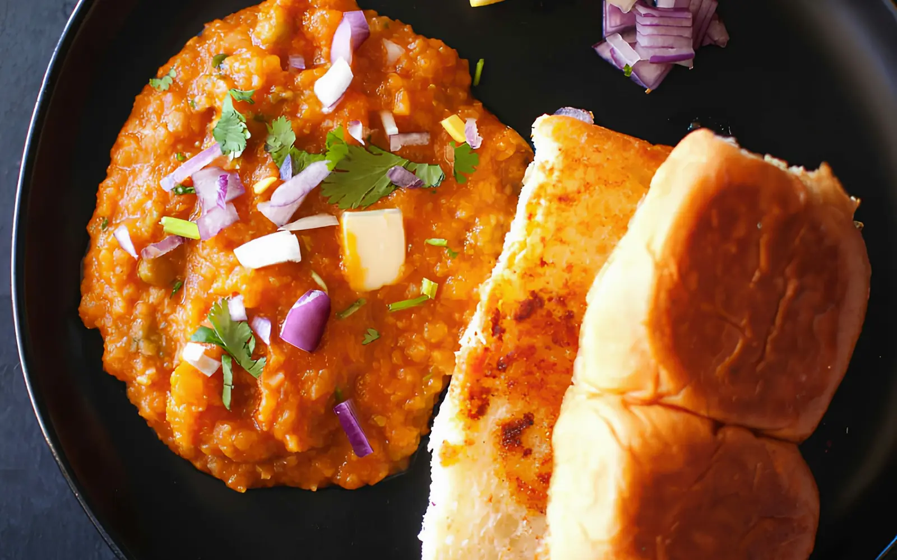

12 dishes
Street Food
Chaat, pav and late-night snacks
Pick a dish and cook it tonight.
01
Dishes
12 recipes IndiaEasyMumbai Pav BhajiMakkhan wali masli hui sabzi aur sika hua pav.40 minMediumServes 4
IndiaEasyMumbai Pav BhajiMakkhan wali masli hui sabzi aur sika hua pav.40 minMediumServes 4 IndiaHardAmritsari KulchaAloo-paneer bhara tandoori jaisa kulcha, chole ke saath.60 minMildServes 4
IndiaHardAmritsari KulchaAloo-paneer bhara tandoori jaisa kulcha, chole ke saath.60 minMildServes 4 IndiaMediumVada PavMasaledaar aloo ka vada, pav aur lehsun chutney mein.50 minSpicyServes 4
IndiaMediumVada PavMasaledaar aloo ka vada, pav aur lehsun chutney mein.50 minSpicyServes 4 IndiaEasyBombay Veg SandwichHari chutney, sabziyon aur masale wala grilled sandwich.20 minSpicyServes 4
IndiaEasyBombay Veg SandwichHari chutney, sabziyon aur masale wala grilled sandwich.20 minSpicyServes 4 IndiaHardChole BhatureGehre masale ke chole aur phooli hui sunehri bhature.75 minMediumServes 4
IndiaHardChole BhatureGehre masale ke chole aur phooli hui sunehri bhature.75 minMediumServes 4 IndiaMediumPani PuriFuli hui puri mein khatta-teekha pudine ka paani.40 minMildServes 4
IndiaMediumPani PuriFuli hui puri mein khatta-teekha pudine ka paani.40 minMildServes 4 IndiaEasyBhel PuriMurmura, sev, pyaaz aur chutney ki Mumbai wali chaat.15 minMildServes 4
IndiaEasyBhel PuriMurmura, sev, pyaaz aur chutney ki Mumbai wali chaat.15 minMildServes 4 IndiaEasySev PuriPapdi par aloo, chutney aur bareek sev ki chaat.20 minMildServes 4
IndiaEasySev PuriPapdi par aloo, chutney aur bareek sev ki chaat.20 minMildServes 4 IndiaMediumAloo Tikki ChaatKurkuri aloo tikki par dahi, chane aur chutney.35 minMediumServes 4
IndiaMediumAloo Tikki ChaatKurkuri aloo tikki par dahi, chane aur chutney.35 minMediumServes 4 IndiaEasyPapdi ChaatPapdi, dahi, aloo aur chane ki thandi-teekhi chaat.20 minMildServes 4
IndiaEasyPapdi ChaatPapdi, dahi, aloo aur chane ki thandi-teekhi chaat.20 minMildServes 4 IndiaHardRaj KachoriBade, khaste kachori mein dahi, aloo aur chutney ka bharaav.50 minMildServes 4
IndiaHardRaj KachoriBade, khaste kachori mein dahi, aloo aur chutney ka bharaav.50 minMildServes 4 IndiaHardPunjabi SamosaMaide ki parat mein aloo-matar ka masala, talkar kurkura.60 minMildServes 4
IndiaHardPunjabi SamosaMaide ki parat mein aloo-matar ka masala, talkar kurkura.60 minMildServes 4